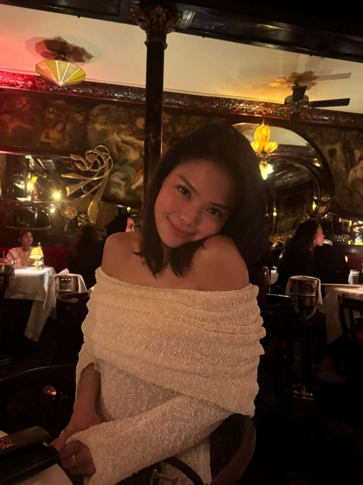
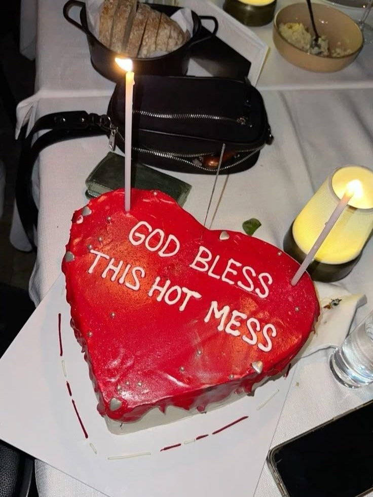

What happens when you turn 25
14 Mar 2025 · Written by Chompak Koonnawarote
Why does everyone look like they have all their shit together but me?

Hi, it’s your quarter life crisis sister here. Lately I’ve been feeling so confused about where I am meant to be in life. Admittedly, I am a 24 year old woman who is just about to graduate from her undergraduate Nutrition degree and just got rejected from my Dietetics Masters today. Yeah, hard blow.
My career aspiration is to help those living with disordered eating, setting up my own clinic where young adults who feel lost or scared to approach a therapist can come for guidance and find a lasting solution. Coming from an Asian background, I understand how taboo the topic of mental health can be, especially with the impossible-to-achieve beauty standards we are exposed to these days. Of course I understand it through and through, I was once said young adult myself. That was until I reached out to a dietitian who guided me and told me everything will be okay, because her too, went through the same thing. That is the reason why I want to pay it forward and help those who might be in the same situation as me.
For context, a Dietetics Masters in the UK is a 2 years course which allows you to talk to ‘patients’. A registered nutritionist is able to guide and give advice to people who are not ‘ill’. That aspiration came crumbling down the moment I received my rejection email. What do I do now? I feel as if I am running out of time. If I wait another year and reapply (not knowing that I will be accepted then), I will be 28 by the time I’m done with Masters. ‘28? Shouldn’t I be achieving more with my life by then?’
Some of my friends are in high paying jobs, getting married or pregnant with their second child. A bright future ahead of them I’m sure. Relecting upon that, I’m still relying on my parents. It feels like I’m not even on step 1 whilst others are on the top floor.
I was told to do what I love and success will follow. I love nutrition, creating recipes, testing recipes, supper clubs and working out. I love caring for others. I love when others feel loved. However, this isn’t reality. I can’t continue to do what I love if it doesn’t pay the bills. How do I establish my own identity in an overly saturated world? The job market is brutal to say the least- where am I supposed to get experience if every job requires prior experience? I want to make something of my own. Make my parents proud. Make myself proud.
Don’t get me wrong, I’m grateful for all that I have. I am just… lost. Seems like all doors are closed at the moment and I don’t know when and if another one will open. I am nervous, but I am not scared. I will make the best of what life throws at me. As long as I do my best today, a better tomorrow will come.
Hey, sometimes it’s easier to be vulnerable online.

Love, Dee Dee